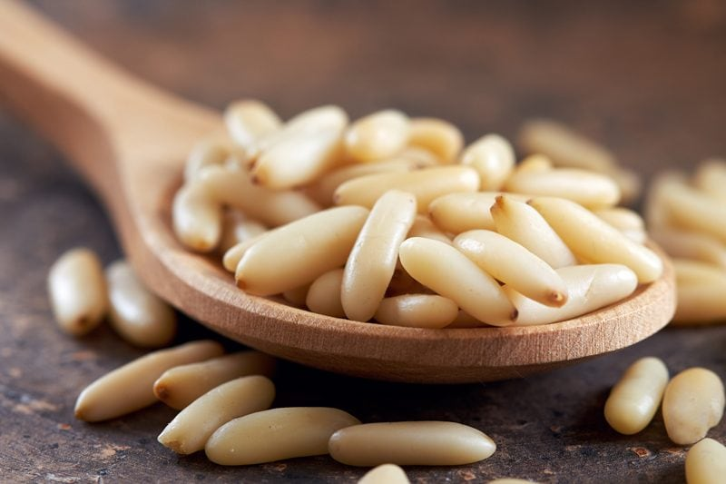

Pine Nuts | No Soaking?
Did you know that pine nuts are the edible seeds of pine trees… now hold on, that doesn’t mean that you can scrounge around the forest, cracking pinecones apart to eat the seeds. It comes from a particular type of pine.
They come in a hard and often spiky cone that protects the tender seeds living inside from predators (are we predators?) until the cone cracks open, depositing the seeds on the ground. Back up, hold the boat, rewind… “edible seeds?” Here we go again, so am I understanding this right…

Are Pine Nuts Seeds?
To harvest pine nuts, producers must first crack the pine cones, typically with heat. The seeds themselves then need to be shelled. After shelling, they have a short shelf life, because of their high oil content. (1)
As you might know from reading my other posts, I love learning where our food comes from (outside of aisle 9 at the grocery store), click (here) to see some photos on how these things grow. Fascinating! That is why it is vital that pine nuts need to be stored in the fridge or freezer. I am actually a little dumbfounded that so many stores can have them sitting in bulk bins!
These nuts/seeds (so confused how to address them now hehe) are very expensive, which is why you don’t see me using them too often in recipes. If you are desperate and can only find them in the bulk bin, taste a few before investing purchasing them to make sure that haven’t gone rancid.
So, do they require soaking?
This seems to be debatable information out in Google-land regarding whether or not pine nuts need to be soaked and I certainly don’t want to get my knickers in a twist trying to figure it out. I visited 23 sites, yep I counted and it is almost split down the middle as to what to do.
So, here is my thought… I maybe partake of pine nuts once a year and when I do, it is a very small amount. With that type of consumption, I might skip the process of soaking and dehydrating. If they were part of my daily diet, then I would go through the soaking process. Best to error on the side of caution. What are your thoughts? I will go ahead and post how we typically soak, dehydrate and/or roast nuts and seeds… then you can do what feels right for you.
 Ingredients:
Ingredients:
- 1 cup raw pine nuts, shelled
- 1 tsp Himalayan pink salt
- 2 cups water
Preparation:
Soaking:
- Place the pine nuts and salt in a glass or stainless steel bowl along with 2 cups of water.
- Leave them on the counter to soak for 8 hours.
- Loosely cover with a clean cloth, this allows the contents of the bowl to breathe.
- After they are done soaking, drain and rinse them in a colander.
Dehydrating:
- Spread the pine nuts on the mesh sheet that comes with the dehydrator.
- Keep them in a single layer and dry them at 115 degrees (F) until they are thoroughly dry and crisp. Make sure they are completely dry. If not, they could mold, plus they won’t have that crunchy, yummy texture you expect from nuts and seeds.
- The dry time will vary due to the machine you own, the type of climate you live in and how full your dehydrator is when drying them.
- Expect anywhere from 12 + hours.
- Cool to room temperature before storing.
- Store in airtight containers such as mason jars.
- Use within 1-3 months – store in the fridge
- Use within 3-12 months – store in the freezer.
Oven method: (no longer raw)
- Preheat the oven to 375 degrees (F).
- Spread the pine nuts on an ungreased cookie sheet in a single layer.
- You may want to spritz the nuts with salt water just before you put them in the oven to give them a light, salty taste.
- Bake for 10-12 minutes.
- Don’t leave them unattended, due to their high oil content, they will continue to roast after you remove them from the oven.
- Remove from the oven as soon as they begin to turn golden, with hints of butterscotch color. Full rich flavor. Texture firm but not brittle. Not crunchy and hard. The sweet spot!
- Cool them quickly to stop the roasting process.
- Good idea to stir them around a bit throughout the process.
- Cool for about 1 hour. Make sure that they are cool before storing.
- Note ~ You can also attempt to dry the pine nuts in the oven and keep them raw but this is tricky. You will need to set the oven on the lowest setting, keep the door ajar and hang a thermometer in the oven to watch the temperature. Nothing is impossible. With this method… good luck and do your best.
Do soaked nuts and seeds have to be dehydrated?
If you are unable to dry the nuts or seeds, it is best to only soak an amount that you can be sure will used within two or three days. As with any live food, mold tends to set in within days if you’re not careful. They will need to be stored in water, sealed tight and placed in the fridge. It is important to rinse them twice a day with fresh water.
© AmieSue.com